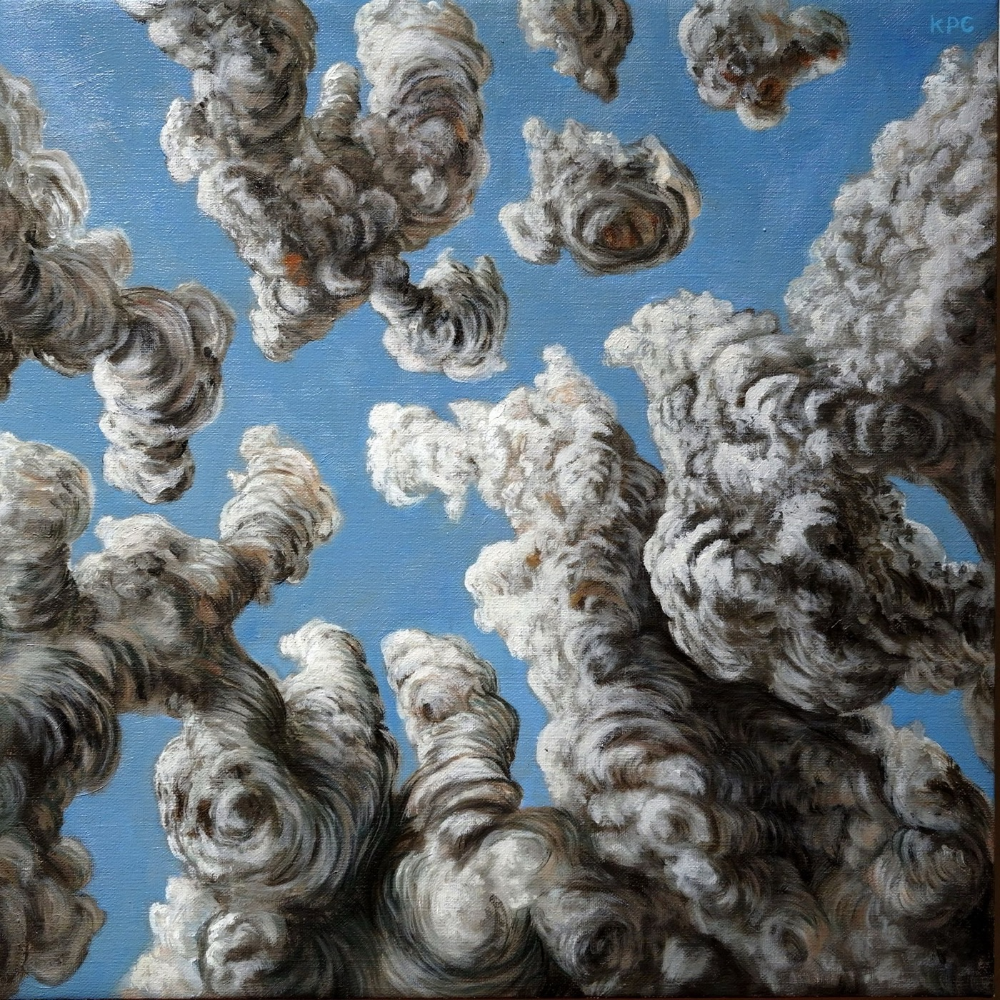

Every work Kyle Parker Cunningham has made, and everything known about each one.
Painting, printmaking, installation, sculpture, exhibitions and other — 2009 to now, one record per work, one schema for all of them. Ask the archive a question. 12 of 160 records carry a collection status; the rest are marked unrecorded rather than guessed.
?
| ID | Title | Year | Discipline | Medium | Status | |
|---|---|---|---|---|---|---|
 |
PT-2024-014 | the river in the sky | 2024 | painting | oil on linen | projectstatus? |
 |
PT-2024-017 | towers | 2024 | painting | oil on linen | status? |
 |
PT-2024-013 | the algebra of water vapor | 2024 | painting | oil on linen | projectstatus? |
 |
PT-2024-003 | bottled lightning | 2024 | painting | oil on linen | projectstatus? |
 |
PT-2024-012 | the atmosphere's electric finger | 2024 | painting | oil on linen | projectstatus? |
 |
PT-2024-001 | above the clouds | 2024 | painting | oil on linen | projectstatus? |
 |
PT-2024-008 | low angle sun rays | 2024 | painting | oil on linen | projectstatus? |
 |
PT-2024-006 | felt and lived | 2024 | painting | oil on linen | status? |
 |
PT-2024-010 | out there, on the horizon, a solitary cloud | 2024 | painting | oil on linen | status? |
10 further records match — load the rest of 2024 · or export this query as JSON
Saved queries — ways through the archive
tags:solarpunk ∧ subject:animal
Animals wearing the future
Flora and fauna donning the technology of man to survive a climate-changed environment. The engine of the artist statement.
18 records · 2014 — 2022
project:"the-memory-of-atmosphere"
The Memory of Atmosphere
What the sky keeps and what it lets go — the 2024 weather paintings, complete, with the exhibition catalog.
14 records · complete · 2024
has:painting ∧ has:print ∧ same:title
Painted, then scribed
Works that exist twice: an oil panel and, years later, the same image cut into a drypoint plate.
6 pairs · 2015 — 2023
year_reworked != null
Returned to, years later
Paintings the studio reopened — Butterfly Conundrum (2015, reworked 2020) and its kin.
9 records
discipline:installation ORDER BY year
The whole is bigger than the parts
Eight installations, 2015 to 2023 — dense matrices of interconnected stories.
8 records
status:unrecorded ∧ has:photograph
Photographed, not yet accounted for
The honest gap: works with an image but no collection status. The archive shows its own holes.
148 records